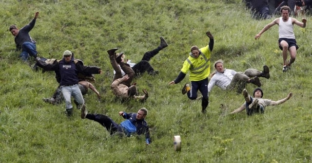
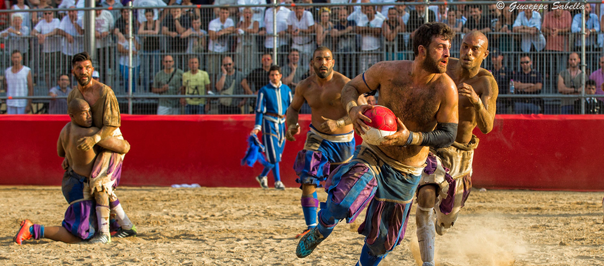

Oficialmente realizada em pequenas Aldeias na Inglaterra, a corrida do queijo ocorre anualmente no mês de maio. Do alto de uma colina é jogada uma peça redonda de queijo e as pessoas devem descer correndo para alcançá-lo. O primeiro que cruzar a linha de chegada, leva o queijo para casa. O esporte, que tem aproximadamente 200 anos, é tradição por lá.
Prática secular na Itália, o Calcio Storico é uma mistura de rugby com futebol. Mas cala que não é só isso! Essa mistura ganhou um tempero a mais que faz toda a diferença no esporte: a brutalidade. São dois times, de 27 jogadores cada, na arena. O que eles precisam fazer é levar a bola até o gol adversário e, para isso, vale usar força e violência. O esporte tem uma pitada de MMA e os competidores, muitas vezes, saem bem machucados.
Aqui está, sem dúvidas, o teste de resistência mais esquisito de todos os tempos. Ocorrido também na Inglaterra, o esporte consiste em colocar Furões dentro das calças e ver quem aguenta mais tempo. Sim, homens botam aqueles bichos fofinhos dentro das calças para um teste de resistência que é, no mínimo, bem esquisito. A Inglaterra tem cada uma.

Você já deve ter visto regata à vela ou remo, mas em Yorkshire, no Canadá, as regatas são em abóboras gigantes. Sim! Competidores se reúnem para remar dentro dos alimentos e ver quem alcança primeiro a linha de chegada.

Esse é o Campeonato Mundial de Carregamento de Mulheres. Desde 1997, na Finlândia, homens correm carregando suas esposas ou amigas nas costas. O percurso percorrido é de mais de 253 metros e tem vários obstáculos. Ganha quem fizer o percurso primeiro.